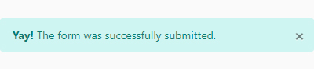

Alerts¶
Introduction¶
Alerts can be send to the end-user on a call-back function or in other cases. The alerts will pop-up in the bottom right corner of the screen. In this chapter, you will learn how to use these alerts and how to configure them.
Implementing an alert¶
To implement an alert, you need to import the AlertService (alert.service.ts) and the Alert (alert.ts) model.
You can find these files in chassis-automation-client/src/app/components/alert.
To show a new alert to the user, you have to emit a new instance of an Alert to the alert property of the AlertService
with the desired content. The table below shows the Alert model’s constructor parameters.
| Parameter name | Brief description |
|---|---|
| message | The message that should be displayed in the alert |
| type | The type of the alert (success | warning | danger | info) |
| prefix (optional) | An optional prefix that will be displayed before the message |
| interval (optional) | An optional interval that holds the amount of time an alert should be shown. The default value is 5 seconds (5000 ms) |
The code example below shows a case where a form is submitted. After submission, a alert of the type success is send to the user
with a prefix.
// Other imports...
import { AlertService } from './components/services/alert.service';
import { Alert } from './components/alert/alert';
constructor(
// Other injectables...
private alertService: AlertService
) {}
export class ExampleComponent {
protected submitForm(data: any) {
// Do the form submit. When complete, notify the user through an alert
this.alertService.alert.next(
new Alert(
'The form was successfully submitted.',
'success',
'Yay!'
)
);
}
}
The image below shows how the alert will be rendered to the end-user. Because an optional interval was not provided, this alert will be shown for 5 seconds.
